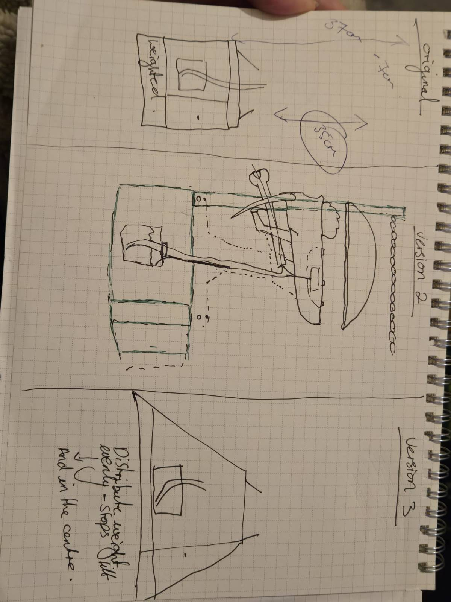
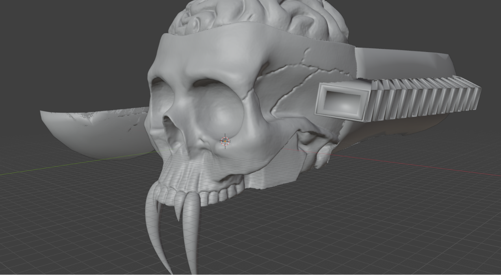
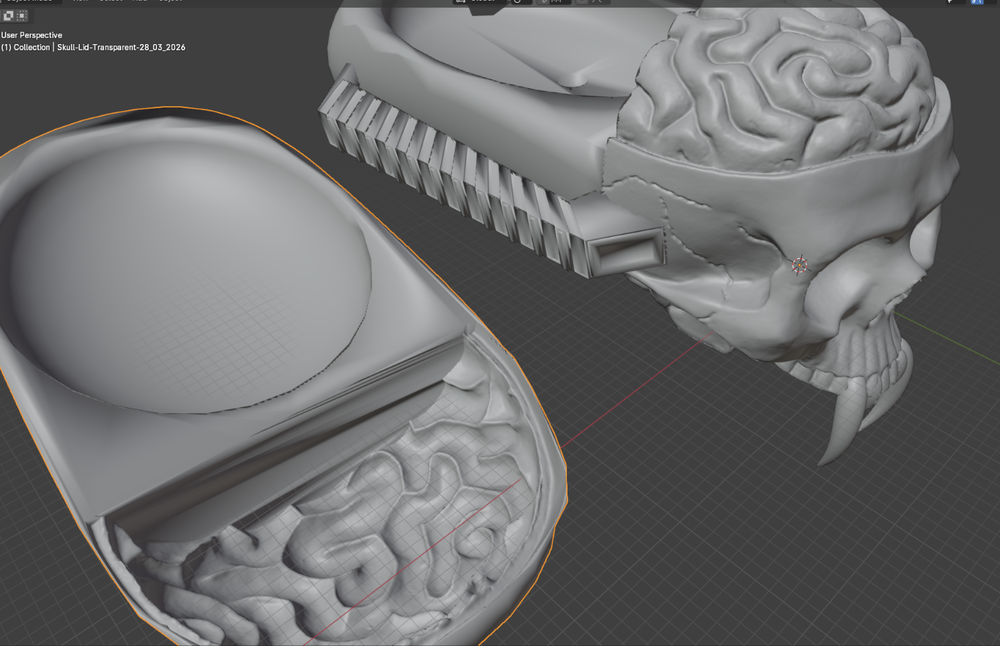
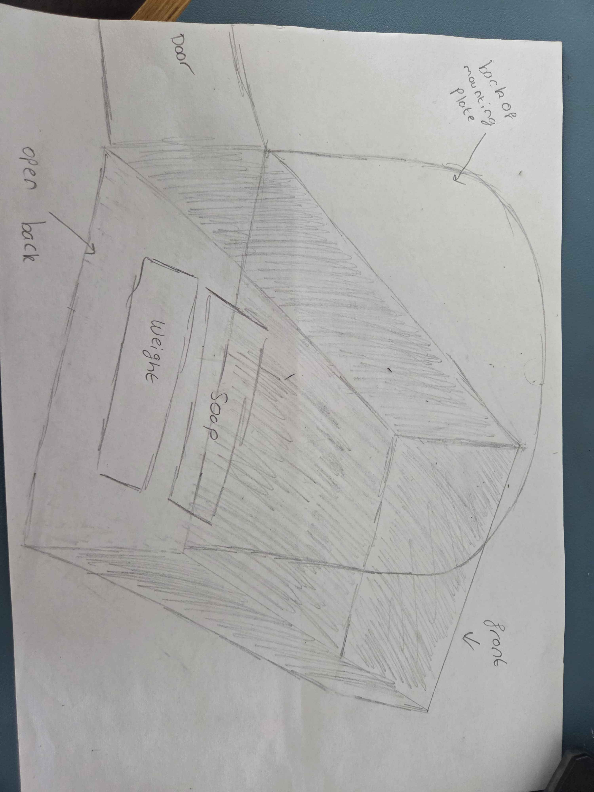
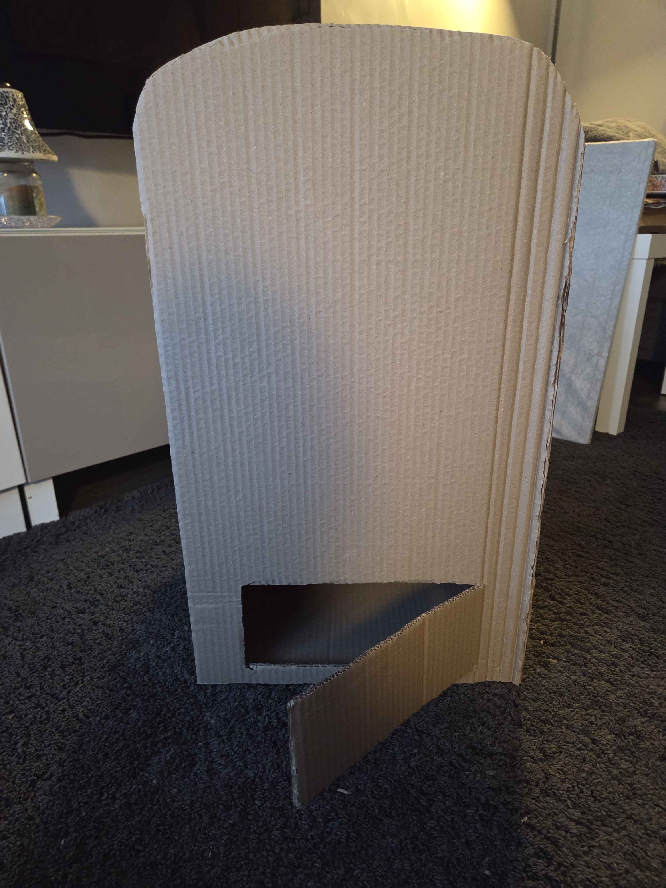

Planning - 19/01/2026
The rest of January was mostly attending module workshop sessions and doing research on mechanisms, materials, base layout designs.
Most of February was attending module workshop sessions, weekly meetings, research and finishing the Spec sheet for the project proposal.
Design Concept phase - 2D design - 19.02.2026.

The group were investigating whether a wall mounted display would be structurally and commercially beneficial or whether a stand alone stand would be better. After discussing it, agreements were made on a stand alone stand based on stand alone sinks around theme parks, leisure and experience parks.

First skull attempt in blender - 02/03/2026

Attempts to use an inspiration picture behind a mesh cube, opacity lowered so that it did not distract away from the model itself and using loop cuts, extrudes
Review of base - 14/03/2026
Doubts on a stand alone base was begining to elevate as considerations towards a frame being more beneficial with this project. The group decided to change the base into a frame for commercial convienience, and practicality.
3D Scanned Model - 16/03/2026
 |
 |
After errors during the first skull attempt, the group decided to attempt another design method currently in the module. This reduced production time on detailling.
Created fangs to go onto model - 17/03/2026

Using a Sphere and loop cuts, a little resizing and shifting edges these fangs were added towards the alien aesthetic look the porject is going for.
Skull cut and modified ready for next stages 24/03/2026 -
 |
 |
Skull was cut in half using boolean techniques, fangs added onto model, bottom base is rounded inwards to allow room for mechanism, jaw and inner jaw/ tongue.
Back of skull added and more alien aesthetics 28/03/2026 -
 |
 |
Skull was cut in half using boolean techniques, fangs added onto model, bottom base is rounded inwards to allow room for mechanism, jaw and inner jaw/ tongue.
New concept 2D design for base introduced - 15/04/2026



First attempt at creating inner jaw / tongue on blender - 16/04/2026
Blender crashed and progress was lost.
Created lower fangs/teeth to go onto lower jaw on blender - 16/04/2026
Created lower jaw on blender - 16/04/2026
Creation of first physical base - 18/04/2026



Updated new attempt at inner Jaw/ tongue on blender - 29/04/2026
Inner tube/ hole added to model to allow a silicone tube thorough using a boolean. This will be where the soap tube is pumped through.
Monthly End Progress
70% of the skull complete. Alterations can be made later.
This is the progression throughout the month of April.
Hoses/pipes made for aesthetic purposes - 01/05/2026
Spine made to let Silicone hose travel to back with base - 01/05/2026
02/05/2024
Attempt at wall attachment for skull base. Spine hollow for silicone hose to go through.
Redesigned base and altered it to fit frame - 05/05/2024
Redesigned base and altered it to fit frame - 11/05/2024
These models are specifically for printing and assembly reasons. To utilise the smaller prints the skull and lid needed to be quatered, with pins to help with attachment. There would have been issues getting supports out of the tubes and spine so they were also cut down and redesigned for easy assembly.
Main Model Print Set - 11/05/2026
Mechanism-12.05.2026
The proposed mechanism was designed around a push-based accuator system, in which the inner jaw and tongue assembly extended forwards while simultaneously causing the lower jaw to rotate downwards. This created two coordinated points of movement intended to enhance the animatronics effect and engagement. Once the tongue assembly reached its fully extended position, a peristaltic pump system would dispense liquid soap onto the users handsbefore pausing breifly and retracting the mechanism back to its original close position.